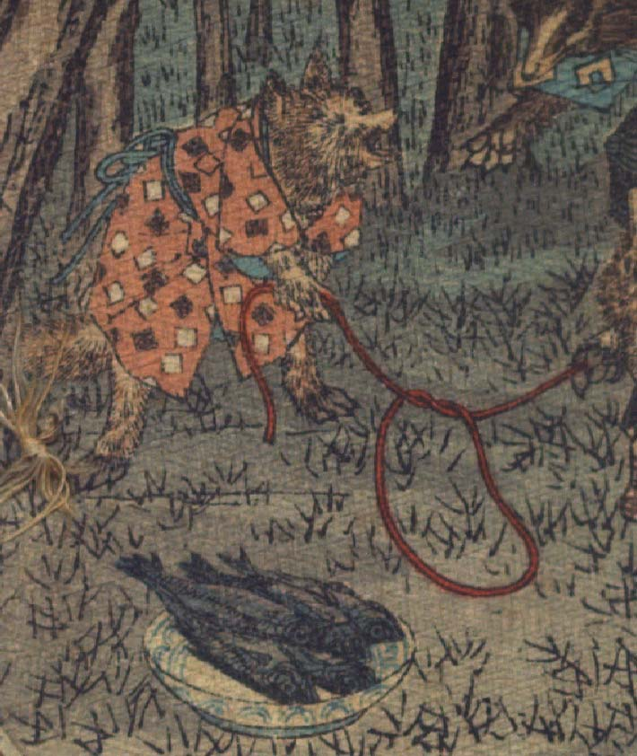

子狐。柄が入った橙色の着物を着ている。腰を屈めて、縄で作った罠の片側を持っている。罠の輪の傍らには皿に盛った魚が餌として置かれている。
著作者：J.Dautremer／出典：親書誌：U426_nichibunken_0120：La victoire du petit renard／日付：2006／資源識別子：U426_nichibunken_0120_0001_0001
Copyright (c)2010- International Research Center for Japanese Studies, Kyoto, Japan. All rights reserved.